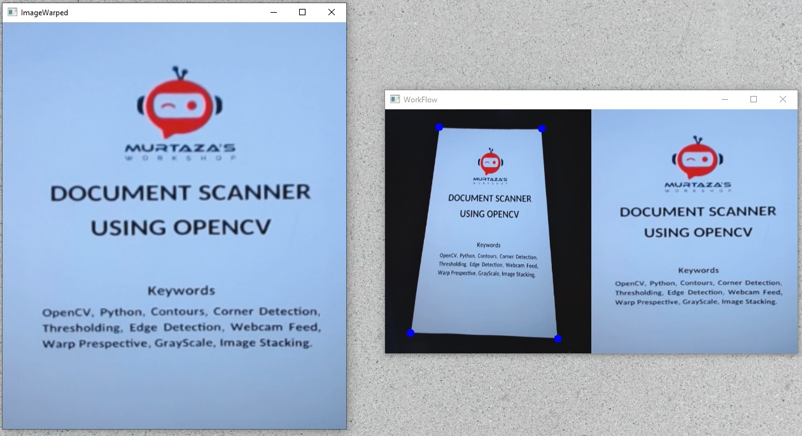

RAKIB RARY
import cv2
import numpy as np
widthImg = 540
heightImg = 640
cap = cv2.VideoCapture(0)
cap.set(10, 150)
def preProcessing(img):
imgGray = cv2.cvtColor(img, cv2.COLOR_BGR2GRAY)
imgBlur = cv2.GaussianBlur(imgGray, (5, 5), 1)
imgCanny = cv2.Canny(imgBlur, 200, 200)
kernel = np.ones((5, 5))
imgDial = cv2.dilate(imgCanny, kernel, iterations=2)
imgThres = cv2.erode(imgDial, kernel, iterations=1)
return imgThres
def getContours(img):
biggest = np.array([])
maxArea = 0
contours, hierarchy = cv2.findContours(img, cv2.RETR_EXTERNAL, cv2.CHAIN_APPROX_NONE)
for cnt in contours:
area = cv2.contourArea(cnt)
if area > 5000:
# cv2.drawContours(imgContour, cnt, -1, (255, 0, 0), 3)
peri = cv2.arcLength(cnt, True)
approx = cv2.approxPolyDP(cnt, 0.02 * peri, True)
if area > maxArea and len(approx) == 4:
biggest = approx
maxArea = area
cv2.drawContours(imgContour, biggest, -1, (255, 0, 0), 20)
return biggest
def reorder(myPoints):
myPoints = myPoints.reshape((4, 2))
myPointsNew = np.zeros((4, 1, 2), np.int32)
add = myPoints.sum(1)
# print("add", add)
myPointsNew[0] = myPoints[np.argmin(add)]
myPointsNew[3] = myPoints[np.argmax(add)]
diff = np.diff(myPoints, axis=1)
myPointsNew[1] = myPoints[np.argmin(diff)]
myPointsNew[2] = myPoints[np.argmax(diff)]
# print("NewPoints",myPointsNew)
return myPointsNew
def getWarp(img, biggest):
biggest = reorder(biggest)
pts1 = np.float32(biggest)
pts2 = np.float32([[0, 0], [widthImg, 0], [0, heightImg], [widthImg, heightImg]])
matrix = cv2.getPerspectiveTransform(pts1, pts2)
imgOutput = cv2.warpPerspective(img, matrix, (widthImg, heightImg))
imgCropped = imgOutput[20:imgOutput.shape[0] - 20, 20:imgOutput.shape[1] - 20]
imgCropped = cv2.resize(imgCropped, (widthImg, heightImg))
return imgCropped
def stackImages(scale, imgArray):
rows = len(imgArray)
cols = len(imgArray[0])
rowsAvailable = isinstance(imgArray[0], list)
width = imgArray[0][0].shape[1]
height = imgArray[0][0].shape[0]
if rowsAvailable:
for x in range(0, rows):
for y in range(0, cols):
if imgArray[x][y].shape[:2] == imgArray[0][0].shape[:2]:
imgArray[x][y] = cv2.resize(imgArray[x][y], (0, 0), None, scale, scale)
else:
imgArray[x][y] = cv2.resize(imgArray[x][y], (imgArray[0][0].shape[1], imgArray[0][0].shape[0]),
None, scale, scale)
if len(imgArray[x][y].shape) == 2: imgArray[x][y] = cv2.cvtColor(imgArray[x][y], cv2.COLOR_GRAY2BGR)
imageBlank = np.zeros((height, width, 3), np.uint8)
hor = [imageBlank] * rows
hor_con = [imageBlank] * rows
for x in range(0, rows):
hor[x] = np.hstack(imgArray[x])
ver = np.vstack(hor)
else:
for x in range(0, rows):
if imgArray[x].shape[:2] == imgArray[0].shape[:2]:
imgArray[x] = cv2.resize(imgArray[x], (0, 0), None, scale, scale)
else:
imgArray[x] = cv2.resize(imgArray[x], (imgArray[0].shape[1], imgArray[0].shape[0]), None, scale, scale)
if len(imgArray[x].shape) == 2: imgArray[x] = cv2.cvtColor(imgArray[x], cv2.COLOR_GRAY2BGR)
hor = np.hstack(imgArray)
ver = hor
return ver
while True:
success, img = cap.read()
img = cv2.resize(img, (widthImg, heightImg))
imgContour = img.copy()
imgThres = preProcessing(img)
biggest = getContours(imgThres)
if biggest.size != 0:
imgWarped = getWarp(img, biggest)
# imageArray = ([img,imgThres],
# [imgContour,imgWarped])
imageArray = ([imgContour, imgWarped])
cv2.imshow("ImageWarped", imgWarped)
else:
# imageArray = ([img, imgThres],
# [img, img])
imageArray = ([imgContour, img])
stackedImages = stackImages(0.6, imageArray)
cv2.imshow("WorkFlow", stackedImages)
if cv2.waitKey(1) & 0xFF == ord('q'):
break
